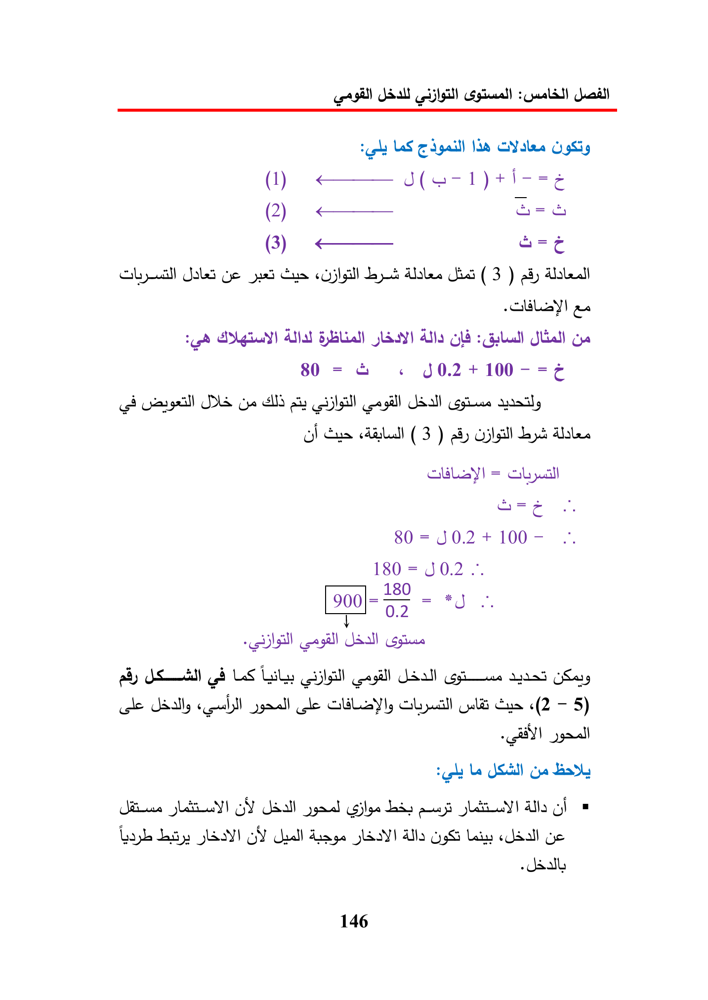

LS
law
(1)
——
(2)
<—
(3)
<——
ae
Ye
jd
Gus
Loyd
(3)
dy
Alatedlt
as
Atal
Ala
ye
80
=
«©
J02+100-=¢
DS
ld
iy
gill
Ol
(3)
a8)
dates
=
Gbyual
ane
80
=
J0.2
+
100
-
180
=
50.2
..
i80_,
900\-
G5
>
ay
ob
LS
Lily
tyres
ce
gle
Gul
Cus
«(2
—
5)
ci)
Le
Gye
slau)
GY
Udall
yma
bs
LLY
alla
gi
Leap
Ley
oY)
GY
hall
SY
lla
Lats
«dal
ye
146